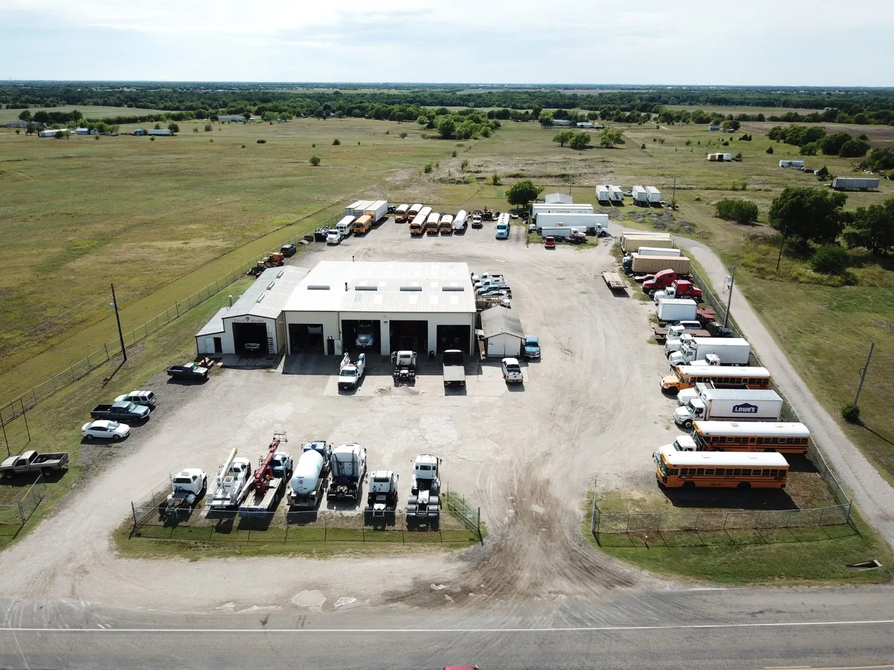
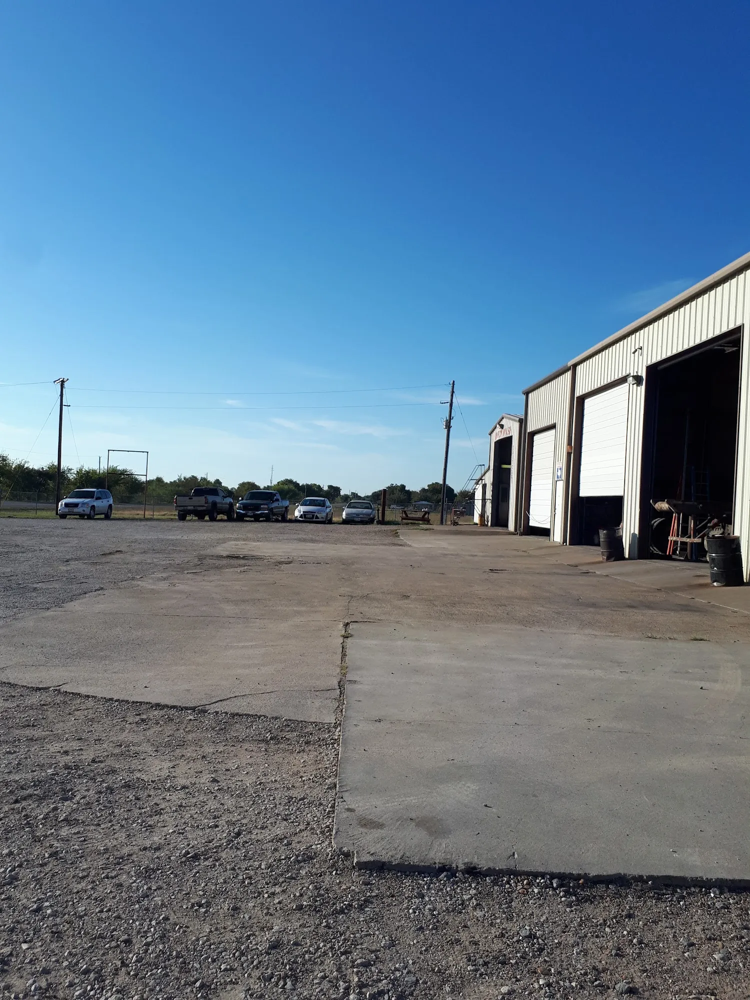
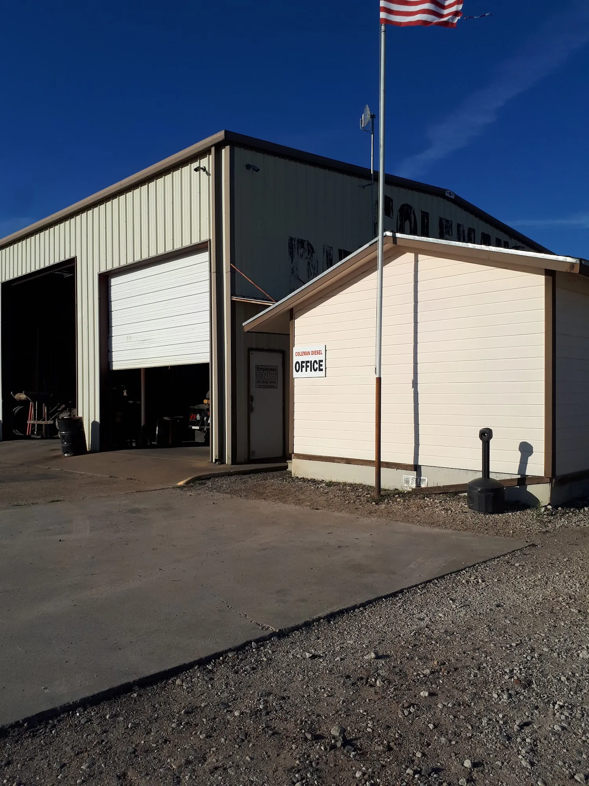
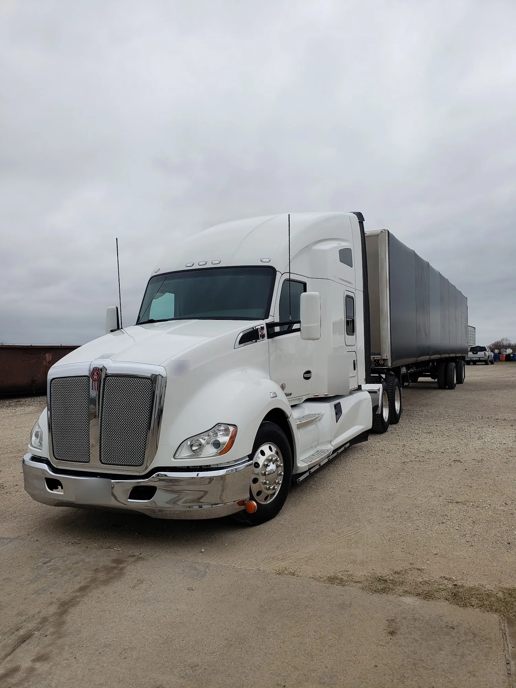

The Shop
A big yard for big rigs.
Bays, a drive-over pit, a parts room and a lot full of trucks, buses and trailers, right on FM 1570 outside Greenville.
10460 FM 1570
Look for the flag and the open bays.
The shop sits on a wide gravel-and-concrete yard with room to maneuver a tractor-trailer. The office is the white building beside the flagpole.
Drive-over inspection pitRoom to get under the rig
Parts room & counterParts and filters on hand
Truck washHopper washouts and truck washes
On-site parkingBig lot off FM 1570
AccessibleWheelchair-accessible parking lot and restroom
RestroomOn site for customers
Cards & checksChecks, credit and debit cards
Tap to payNFC mobile payments


Gallery · drag or swipe
Inside the bays.
Real photos from the shop’s Google listing. Customer plates and fleet numbers are blurred.

Call the shop
Bring it to the yard.
Monday to Friday, 8 AM to 5 PM Central at 10460 FM 1570, Greenville, TX 75402.
(903) 455-9348